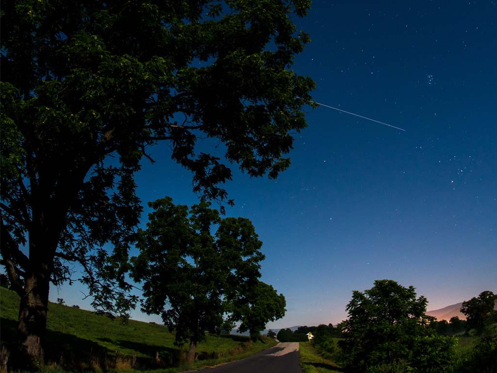
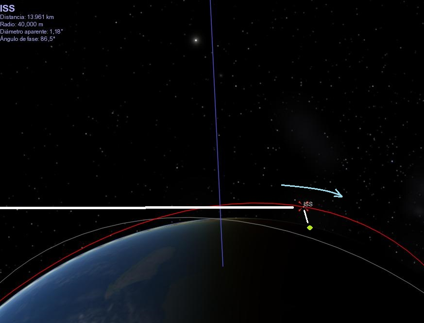

¿Cómo distinguir la EEI en el cielo?

Timelapse de la ISS sobre el cielo del atardecer (Crédito https://spotthestation.nasa.gov).
¡Que no te engañe!
La Estación Espacial Internacional se parece a un avión o una estrella muy brillante que se mueve por el cielo.
La diferencia principal con los aviones es que no tiene luces intermitentes, ni cambia de dirección. También se moverá en el cielo mucho más rápido que un avión típico que vuela a aproximadamente 950 kilómetros por hora, mientras que la Estación Espacial se mueve en su órbita a... ¡28.500 kilómetros por hora!
En el siguiente video puedes observar el registro de un pasaje de la EEI por el cielo de Pando, Canelones, Uruguay.
Vídeo "ISS (Estación Espacial Internacional) 5 de julio 2015", de Daniel Gastelú.
Y recuerda... la Estación Espacial Internacional (y todos los satélites artificiales en general) se observan en el crepúsculo matutino o vespertino.
En la siguiente imagen se entiende la razón de esto.

- El segmento blanco horizontal representa un haz de luz solar que incide sobre la EEI.
- La EEI aparece indicada como ISS por sus siglas en inglés.
- En rojo vemos la trayectoria que la EEI sigue alrededor de la Tierra (órbita) y
- la flecha celeste nos indica el sentido de ese movimiento en la imagen.
- El punto verde representa a un observador -imagina que eres tú- en la superficie de la Tierra, luego del atardecer.
Parte de la luz solar reflejada es avistada por el observador. Unos minutos más tarde, la EEI no será visible pues ingresará en la sombra de la Tierra. Al estar en la sombra de la Tierra no recibe luz solar que la ilumine. Esto explica la razón de los crepúsculos como momentos del día para avistar a la EEI.